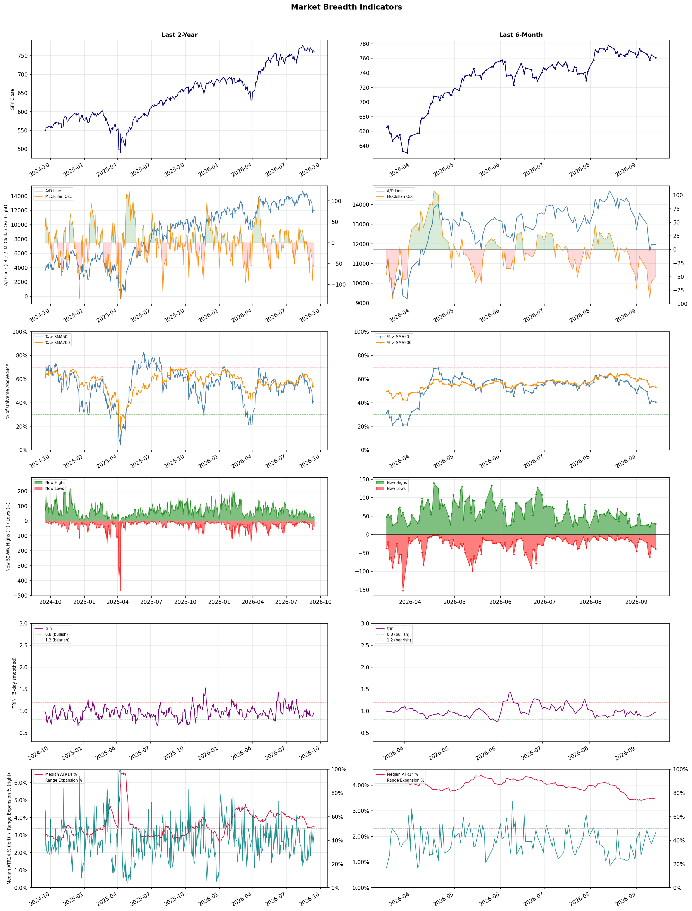

A daily market breadth and sector rotation report for active investors
| Item | Read |
|---|---|
| Regime | Defensive |
| Risk posture | Defensive |
| Universe | 1,325 stocks tracked · 29 new 52-week highs · 30 active swing setups |
| Breadth | only 40.5% of tracked stocks are above SMA50, new lows exceed new highs (39 vs 29), McClellan oscillator (breadth momentum) is negative at -49.9 |
| Leadership | Oil & Gas Refining & Marketing, Diagnostics & Research, and Oil & Gas Integrated |
| Weakest groups | Footwear & Accessories, Solar, and Electrical Equipment & Parts |
Use this report to prioritize research and chart review; validate entries, stops, liquidity, earnings, and risk before acting.
| Item | Read |
|---|---|
| Primary read | Defensive regime with Defensive risk posture. |
| Research queue | DINO, UGP, MPC, VLO, PSX |
| Leadership focus | Oil & Gas Refining & Marketing, Diagnostics & Research, and Oil & Gas Integrated |
| Caution list | Footwear & Accessories, Solar, and Electrical Equipment & Parts |
| Review prompt | Check extension risk, chart location, fundamentals, valuation, and earnings before using any research row. |
| Item | Read |
|---|---|
| Primary read | 4 active risk warnings; use screen output as watchlist input only. |
| Bullish screens | AVAH, FRO, NAT, STRC, DBX |
| Bearish screens | PWP, ARDX, MPT, BXMT, CMS |
| Alerts / levels | Automated trigger, stop, ATR, liquidity, reward/risk, and event-risk levels are pending future enrichment. |
| Review prompt | Open the linked chart, define trigger and invalidation, then check liquidity and event risk independently. |
Risk Posture: Defensive — screen backdrop favors caution; require independent risk review before new exposure
Metric context: McClellan below -50 = elevated selling pressure; below -100 = washout territory. Range Expansion = share of stocks with daily range above their 20-day average. Signal Density = share of tracked names appearing in signal screens.
| Breadth Date | % > SMA50 | % > SMA200 | New Highs | New Lows | McClellan | Median Range | Avg Range | Median ATR14 | Range Expansion | Signal Density |
|---|---|---|---|---|---|---|---|---|---|---|
| 2026-09-14 | 40.5% | 53.3% | 29 | 39 | -49.9 | 3.0% | 3.5% | 3.5% | 46.6% | 3.6% |

Prior comparison date: September 11, 2026
| Metric | Prior | Current | Change |
|---|---|---|---|
| Regime | Defensive | Defensive | unchanged |
| Risk Posture | Defensive | Defensive | unchanged |
| % > SMA50 | 41.4% | 40.5% | -0.9 pts |
| % > SMA200 | 53.6% | 53.3% | -0.3 pts |
| New Highs | 32 | 29 | -3 |
| New Lows | 32 | 39 | -7 |
Top-10 industries entering: Medical Care Facilities. Top-10 industries leaving: Banks - Diversified. New multi-signal long setups: AVAH, BBY, CRBG, DBX, DV, EQH, GEN, IBRX, IOVA, MTCH. New multi-signal short setups: none.
| Status | Tickers | Read |
|---|---|---|
| Added | APPS, ARIS, AVAH, BBY, BTG, CRBG, DBX, DV | New technical screen matches vs prior report. |
| Removed | ASPI, BEPC, BHC, DHT, FLO, HPQ, ING, MCD | No longer present in today's technical screen matches. |
| Still Active | ARDX, AU, BXMT, CMS, FRO, MPT, NAT, VOD | Appeared in both current and prior reports. |
| Promoted | none | Model Screen Score improved by at least 15 points. |
| Downgraded | none | Model Screen Score declined by at least 15 points. |
| Direction | Industry | ETF | Prior Rank | Current Rank | Days | Rank Change |
|---|---|---|---|---|---|---|
| Rose | Gold | GDX | 85 | 6 | 42 | +79 |
| Rose | Agricultural Inputs | N/A | 84 | 7 | 28 | +77 |
| Rose | Capital Markets | KCE | 75 | 14 | 35 | +61 |
| Rose | Healthcare Plans | IHF | 70 | 15 | 35 | +55 |
| Rose | Grocery Stores | N/A | 84 | 32 | 35 | +52 |
Bull: The rising relative strength of gold, as evidenced by the GDX ETF's performance, can be attributed to increasing investor interest in gold mining stocks amid ongoing economic uncertainties and inflationary pressures. Despite recent outflows from GDX, the headlines suggest a focus on the potential for gold miners to outperform traditional gold investments, as indicated by discussions around gold stocks providing better returns without chasing the commodity itself. Additionally, the emphasis on knowing one's investment strategy in the metals sector reflects a broader trend of investors seeking stability and value in gold amid fluctuating market conditions.
Bear: While the rising relative strength of gold may seem promising, the recent outflows from the GDX ETF indicate a lack of sustained investor confidence, suggesting that the current interest in gold mining stocks may be more speculative than based on solid fundamentals. Additionally, the discussions around gold stocks outperforming traditional gold investments could be misleading, as they often fail to account for the inherent risks and volatility associated with mining operations, which can be exacerbated by rising operational costs and regulatory pressures. Thus, the notion that gold miners will consistently provide better returns may overlook the potential for significant downside as market conditions shift.
Verdict: The gold industry is experiencing a rise in interest due to heightened economic uncertainties and inflation, driving investors toward gold mining stocks as a perceived safer investment compared to traditional gold. However, the bear case highlights a key risk: the recent outflows from the GDX ETF indicate a lack of sustained confidence, suggesting that the current enthusiasm may be speculative and could lead to significant downside if operational challenges and regulatory pressures impact mining profitability. Investors should remain cautious and consider the volatility associated with mining operations while assessing their strategies in this sector.
Sources: Yahoo Finance, Google News
Bull: The Agricultural Inputs sector is experiencing a rise in relative strength primarily due to increasing demand for food production and agricultural efficiency, as highlighted by articles like "Best Agriculture Stocks to Buy in 2026" from The Motley Fool and "7 Agricultural Stocks and ETFs to Buy and Hold" from U.S. News Money. Additionally, the broader economic recovery and the breakout of the economically sensitive materials sector, as noted by Seeking Alpha, are driving investments towards agricultural inputs, which are essential for meeting the growing global food demand. This trend is further supported by the recognition of opportunities within the sector, despite short-term fluctuations like CF Industries' recent drop, indicating a resilient long-term outlook.
Bear: While the agricultural inputs sector may currently exhibit rising relative strength, this trend could be misleading due to underlying vulnerabilities such as increasing input costs, supply chain disruptions, and potential regulatory pressures on farming practices. Moreover, the recent drop in CF Industries' stock price suggests that the market may be reacting to overvaluation concerns and a potential slowdown in demand, raising questions about the sustainability of the bullish narrative amid broader economic uncertainties. Additionally, the reliance on short-term trends may overlook the long-term challenges posed by climate change and shifting consumer preferences towards sustainable practices, which could undermine growth prospects in the agricultural inputs space.
Verdict: The agricultural inputs sector is likely experiencing upward momentum due to heightened global food demand and a recovering economy, driving investments in essential agricultural products. However, key risks include rising input costs and supply chain disruptions, which could challenge profitability and sustainability, particularly if market sentiment shifts in response to overvaluation concerns or regulatory pressures. Investors should remain vigilant about these vulnerabilities while considering long-term growth opportunities in the sector.
Sources: Google News
Bull: The rising relative strength of the Capital Markets sector, as reflected in the performance of the SPDR S&P Capital Markets ETF (KCE), can be attributed to a combination of strong investor sentiment and favorable market conditions. Recent headlines suggest a bullish outlook on Wall Street, with J.P. Morgan highlighting specific stock sectors primed for growth, indicating that capital markets are likely benefiting from increased investor activity and confidence. Additionally, the focus on midterm elections may be driving volatility, prompting investors to seek opportunities in capital markets as they adjust their portfolios in response to changing political and economic landscapes.
Bear: While the rising relative strength of the Capital Markets sector may seem promising, it is essential to consider the underlying risks that could undermine this trend. The recent headlines indicate a potential slowdown in the AI sector, which could negatively impact capital markets reliant on tech-driven growth, and the focus on midterm elections may introduce significant political uncertainty, leading to increased volatility and investor caution rather than sustained confidence. Furthermore, the notion of a bullish outlook may be overly optimistic, as market sentiment can shift rapidly in response to economic data or geopolitical events, suggesting that the current strength of KCE may not be sustainable.
Verdict: The Capital Markets sector is experiencing rising relative strength primarily due to strong investor sentiment and favorable market conditions, driven by bullish forecasts from major financial institutions and increased trading activity ahead of the midterm elections. However, key risks persist, particularly the potential slowdown in the AI sector and the political uncertainty surrounding the elections, which could lead to increased volatility and a rapid shift in market sentiment. Investors should remain cautious and consider diversifying their portfolios to mitigate these risks while capitalizing on current opportunities.
Sources: Yahoo Finance, Google News
Bull: The rising relative strength of the Healthcare Plans sector can be attributed to favorable market sentiment surrounding healthcare ETFs, particularly in light of recent headlines discussing the impact of Trump's drug deals, which may lead to more favorable pricing and increased profitability for healthcare providers. Additionally, the focus on companies like UnitedHealth and Humana, which are experiencing bullish outlooks, suggests that investor confidence is growing in the sector's ability to deliver solid returns, further bolstered by the broader trend of rising healthcare costs and an aging population that drives demand for health insurance solutions.
Bear: While the rising relative strength of the Healthcare Plans sector may seem promising, it is crucial to consider the potential negative impact of regulatory changes stemming from Trump's drug deals, which could lead to increased scrutiny and pressure on pricing strategies for healthcare providers. Furthermore, the recent pullback of UnitedHealth and mixed outlooks for companies like Humana and Centene suggest that the sector may be facing headwinds, including rising operational costs and potential disruptions from ongoing legislative reforms that could undermine profitability and investor confidence in the long term.
Verdict: The Healthcare Plans sector is experiencing rising relative strength primarily due to positive market sentiment fueled by expectations of favorable pricing from Trump's drug deals, which could enhance profitability for key players like UnitedHealth and Humana. However, investors should remain cautious of potential regulatory changes that could impose pricing pressures and disrupt profitability, particularly as the sector navigates rising operational costs and legislative reforms. It is advisable to closely monitor these developments while considering positions in leading companies within the sector.
Sources: Yahoo Finance, Google News
Bull: The rising relative strength of the Grocery Stores sector can be attributed to the increasing consumer preference for essential goods amid economic uncertainty, as highlighted by the focus on grocery and food stocks in recent headlines. With the growing interest in dollar store stocks and the positive earnings reports from major players like Albertsons, investors are likely seeking stability and value in grocery retail, which is perceived as more resilient compared to other sectors. Additionally, the IPO activity in the convenience store segment indicates a robust demand for food-related retail, further bolstering confidence in the grocery industry’s growth potential.
Bear: While the rising relative strength of the Grocery Stores sector may suggest stability, it is essential to consider that this could be a temporary reaction to economic uncertainty rather than a sustainable growth trend. The increasing focus on dollar stores and convenience store IPOs may indicate a shift in consumer behavior towards more budget-conscious shopping, which could undermine traditional grocery retailers' margins and sales. Moreover, the competitive landscape is intensifying, with discount and convenience formats gaining traction, potentially eroding the market share of established grocery chains like Albertsons.
Verdict: The grocery store sector is experiencing rising strength due to heightened consumer demand for essential goods amid economic uncertainty, driving investors toward perceived stable and resilient retail options. However, the key risk lies in the potential shift towards budget-conscious shopping behaviors, which could pressure traditional grocery retailers' margins and market share as discount and convenience formats gain popularity. Investors should monitor consumer spending trends closely, as a sustained focus on value could challenge established grocery chains.
Sources: Google News
| Direction | Industry | ETF | Prior Rank | Current Rank | Days | Rank Change |
|---|---|---|---|---|---|---|
| Fell | Travel Services | N/A | 3 | 73 | 42 | -70 |
| Fell | Semiconductor Equipment & Materials | SOXX | 19 | 78 | 28 | -59 |
| Fell | Electronic Components | XLK | 17 | 72 | 28 | -55 |
| Fell | Leisure | N/A | 14 | 68 | 42 | -54 |
| Fell | Uranium | URA | 21 | 69 | 7 | -48 |
Bear: While the bull analyst emphasizes long-term growth potential and innovation in the Travel Services sector, the current decline in relative strength signals deeper issues that may not be easily resolved by technological advancements. Economic uncertainties, including inflation and rising interest rates, are likely to continue to erode consumer discretionary spending, leading to a more cautious travel environment. Furthermore, the focus on undervalued stocks may indicate a broader market correction rather than a temporary dip, suggesting that investors are not merely waiting for recovery but are increasingly skeptical about the sector's near-term viability.
Bull: The Travel Services sector is likely experiencing a decline in relative strength due to broader economic concerns impacting consumer discretionary spending, as highlighted in the Q2 reports from companies like Frontier (NASDAQ:ULCC). Additionally, while the industry outlook remains positive with investment opportunities projected for 2026, the current focus on undervalued stocks suggests that investors may be cautious, leading to a temporary dip in sentiment despite long-term growth potential. The emergence of innovative solutions like Webuy's AI travel card indicates a shift towards tech-driven enhancements in travel, but it may not yet be enough to offset the prevailing headwinds affecting consumer confidence.
Verdict: The Travel Services sector is currently facing a decline primarily due to economic uncertainties, such as inflation and rising interest rates, which are dampening consumer discretionary spending and leading to cautious travel behavior. While there is potential for long-term growth driven by innovation, the key risk lies in the possibility that these economic headwinds may persist, resulting in a prolonged downturn rather than a temporary setback. Investors should monitor macroeconomic indicators closely and consider reallocating to more resilient sectors until clearer signs of recovery emerge.
Sources: Google News
Bear: While the bull analyst attributes the semiconductor equipment sector's relative strength decline to external market factors, a deeper analysis reveals that the underlying fundamentals of the sector are deteriorating. The recent headlines indicate a significant slowdown in fab spending and a potential cooling of demand for semiconductor manufacturing equipment, driven by the overhyped AI narrative and excessive valuations. This suggests that even if the broader market stabilizes, the semiconductor equipment sector may continue to struggle due to waning investment in capacity expansion and a shift in focus toward more sustainable growth areas, making a bullish outlook increasingly tenuous.
Bull: The Semiconductor Equipment & Materials sector is experiencing a relative strength decline primarily due to a broader market sell-off triggered by concerns surrounding AI stock valuations and the implications of Federal Reserve policy, as highlighted by the headlines. The significant pullbacks in key players like Applied Materials, Lam Research, and ASML, alongside the broader chip sector's struggles amid a cooling AI investment climate, indicate a cautious sentiment impacting capital expenditures in semiconductor manufacturing. This environment has led investors to reassess growth prospects, causing a ripple effect that has negatively affected the relative performance of the semiconductor equipment stocks.
Verdict: The semiconductor equipment and materials sector is likely experiencing a decline due to a combination of cooling demand for manufacturing equipment and reduced capital expenditures, driven by overhyped AI valuations and a slowdown in fab spending. The key risk from the bear case is that even if broader market conditions improve, the sector may continue to face challenges from shifting investment priorities and a lack of sustainable growth, making it essential for investors to closely monitor fundamentals and adjust their positions accordingly.
Sources: Yahoo Finance, Google News
Bear: While the bull analyst highlights potential recovery in the Electronic Components sector, the persistent decline in relative strength and recent headlines indicate a more troubling trend driven by broader market pressures and a significant pullback in AI-related stocks. This suggests that the sector may be facing deeper structural issues, such as overcapacity, declining demand, or increased competition, which could undermine the optimistic outlook for even the stocks deemed to benefit. Additionally, the mixed performance of equity futures signals a lack of confidence among investors, raising concerns that any short-term recovery may be fleeting amidst ongoing market volatility.
Bull: The recent decline in relative strength for the Electronic Components sector appears to be driven by broader market pressures, particularly indicated by headlines highlighting a general pullback in tech stocks and mixed performance in equity futures. Additionally, the mention of an "AI pullback" suggests that concerns over overvaluation or slowing growth in the tech space, especially in high-flying segments like AI, may be contributing to the sector's weakness. Despite this, the positive outlook from the "3 Electronics Stocks Set to Benefit From a Prospering Industry" article indicates that underlying fundamentals remain strong, suggesting potential for recovery.
Verdict: The recent decline in the Electronic Components sector is primarily driven by broader market pressures, including a significant pullback in tech stocks and concerns over overvaluation in high-growth areas like AI. The key risk highlighted by the bear thesis is the potential for deeper structural issues, such as overcapacity and declining demand, which could hinder any recovery and lead to prolonged weakness in the sector. Investors should remain cautious and closely monitor market trends and company fundamentals before making investment decisions.
Sources: Yahoo Finance, Google News
Bear: While the bull thesis suggests that current challenges in the leisure industry are temporary and that selective investments could yield returns, the persistent decline in relative strength indicates deeper systemic issues that may not be easily resolved. Rising inflation and changing consumer spending habits could lead to a prolonged period of reduced discretionary spending on leisure activities, further exacerbated by potential economic downturns. Additionally, the significant drop in shares of major players like Carnival and Travel + Leisure highlights the fragility of the sector, suggesting that any perceived opportunities may be overshadowed by ongoing volatility and uncertainty in consumer sentiment.
Bull: The Leisure industry is currently experiencing a decline in relative strength primarily due to macroeconomic pressures such as rising inflation and changing consumer spending patterns, which have led to volatility in travel and recreation stocks, as highlighted by the plummeting shares of Carnival and Travel + Leisure. Additionally, the headlines indicate that while there are challenges, there are also opportunities, with analysts identifying specific stocks worth watching and predicting a rebound in the restaurant and tourism sectors by 2026, suggesting that the industry's current struggles may be temporary and that selective investments could yield significant returns as consumer confidence rebuilds.
Verdict: The leisure industry's current decline is fundamentally driven by macroeconomic pressures, including rising inflation and shifting consumer spending patterns, which have led to decreased discretionary spending on travel and recreation. The key risk from the bear case is that these economic challenges may persist, resulting in prolonged volatility and uncertainty in consumer sentiment, potentially stalling any recovery and limiting investment opportunities. Investors should approach the sector with caution, focusing on selective stocks with strong fundamentals that may weather these challenges.
Sources: Google News
Bear: While the bull analyst attributes the recent decline in uranium stocks to negative sentiment and project setbacks, it's crucial to recognize that the broader macroeconomic environment poses significant headwinds for the sector. Rising interest rates and inflationary pressures may lead to decreased investment in capital-intensive projects like nuclear power, which require substantial upfront funding and long timelines. Furthermore, the recent volatility in uranium stocks, with a sharp 17% drop following a substantial rally, indicates that investor enthusiasm may have been overly optimistic, and a reevaluation of the sector's long-term fundamentals is necessary.
Bull: The recent decline in the relative strength of uranium stocks can be attributed to a combination of negative sentiment stemming from the performance of key players like NuScale Power and Oklo, which have faced downgrades and project setbacks, leading to a broader selloff in the sector. Additionally, the significant volatility in uranium stocks, highlighted by a 17% drop following a 57% rally over the past year, suggests that investors are reassessing valuations amidst concerns over cash burn and project timelines, as indicated by UBS's downgrade of NuScale Power and the overall cautious outlook from analysts.
Verdict: The recent decline in uranium stocks is primarily driven by negative sentiment from project setbacks and downgrades of key players like NuScale Power and Oklo, leading to a broader selloff as investors reassess valuations amidst concerns over cash burn and timelines. However, the key risk lies in the broader macroeconomic environment, where rising interest rates and inflation could hinder investment in capital-intensive nuclear projects, necessitating a cautious approach to future investments in the sector. Investors should closely monitor these macroeconomic indicators and the performance of major companies to gauge the potential for a recovery in uranium stocks.
Sources: Yahoo Finance, Google News
| Industry | Rank | ETF | 7d | 14d | 28d | 42d | Chg 42d | Size | 20D | 60D | Composite | Active Setups |
|---|---|---|---|---|---|---|---|---|---|---|---|---|
| Oil & Gas Refining & Marketing | 1 | CRAK | 1 | 3 | 4 | 1 | 0 | 7 | 11.3% | 55.9% | 0.958 | 0 |
| Diagnostics & Research | 2 | N/A | 2 | 1 | 1 | 5 | +3 | 16 | 7.5% | 39.0% | 0.935 | 0 |
| Oil & Gas Integrated | 3 | XLE | 7 | 22 | 14 | 7 | +4 | 10 | 8.5% | 21.5% | 0.931 | 0 |
| Health Information Services | 4 | N/A | 4 | 2 | 2 | 38 | +34 | 12 | 7.6% | 38.1% | 0.892 | 0 |
| Oil & Gas E&P | 5 | XOP | 8 | 15 | 21 | 31 | +26 | 26 | 7.9% | 19.5% | 0.878 | 1 |
| Gold | 6 | GDX | 3 | 6 | 18 | 85 | +79 | 25 | 2.6% | 9.8% | 0.847 | 1 |
| Agricultural Inputs | 7 | N/A | 5 | 17 | 84 | 70 | +63 | 5 | 11.3% | 11.4% | 0.824 | 0 |
| Medical Care Facilities | 8 | IHF | 19 | 14 | 10 | 16 | +8 | 9 | 1.7% | 26.8% | 0.816 | 0 |
| Oil & Gas Midstream | 9 | AMLP | 10 | 12 | 35 | 18 | +9 | 22 | 3.5% | 13.6% | 0.766 | 0 |
| Steel | 10 | SLX | 6 | 37 | 20 | 24 | +14 | 5 | 5.6% | 4.1% | 0.765 | 0 |
Rank columns (7d–42d) show the industry's rank that many trading days ago — lower is stronger. Chg 42d = rank change vs 42 trading days ago — positive means the industry moved up. 20D and 60D are the mean stock return within the industry over that period. Active Setups: count of today's swing-trade candidates from this industry appearing across all signal screens.
| Industry | Rank | ETF | 7d | 14d | 28d | 42d | Chg 42d | Size | 20D | 60D | Composite | Active Setups |
|---|---|---|---|---|---|---|---|---|---|---|---|---|
| Footwear & Accessories | 87 | N/A | 88 | 87 | 87 | 57 | -30 | 5 | -14.7% | -22.3% | 0.040 | 0 |
| Solar | 86 | TAN | 87 | 88 | 88 | 82 | -4 | 8 | -11.2% | -28.8% | 0.090 | 0 |
| Electrical Equipment & Parts | 85 | XLI | 84 | 80 | 70 | 83 | -2 | 12 | -17.1% | -33.7% | 0.095 | 1 |
| Chemicals | 84 | N/A | 82 | 86 | 86 | 84 | 0 | 8 | -10.5% | -26.2% | 0.106 | 0 |
| Utilities - Independent Power Producers | 83 | XLU | 53 | 81 | 83 | 80 | -3 | 5 | -10.2% | -16.2% | 0.112 | 0 |
| Building Products & Equipment | 82 | XHB | 79 | 73 | 63 | 59 | -23 | 8 | -11.3% | -8.8% | 0.127 | 0 |
| Specialty Industrial Machinery | 81 | N/A | 73 | 75 | 55 | 78 | -3 | 21 | -14.2% | -15.7% | 0.129 | 0 |
| Airlines | 80 | N/A | 74 | 83 | 59 | 34 | -46 | 8 | -13.2% | -12.1% | 0.150 | 0 |
| Aerospace & Defense | 79 | ITA | 86 | 71 | 34 | 86 | +7 | 26 | -20.1% | -21.0% | 0.154 | 0 |
| Semiconductor Equipment & Materials | 78 | SOXX | 80 | 76 | 19 | 71 | -7 | 17 | -20.8% | -25.6% | 0.161 | 0 |
Rank columns (7d–42d) show the industry's rank that many trading days ago — lower is stronger. Chg 42d = rank change vs 42 trading days ago — positive means the industry moved up. 20D and 60D are the mean stock return within the industry over that period. Active Setups: count of today's swing-trade candidates from this industry appearing across all signal screens.
These are research candidates from top-ranked stocks, capped at five names per industry to avoid over-concentration. Returns shown (60D, 120D, 250D) are historical — they reflect where prices have already moved, not forward expectations. Extension Risk flags names that may require extra patience or a better entry point. They are not buy signals.
Chart: TV = TradingView chart (opens in browser); PDF = local chart file (if downloaded).
| Ticker | Name | Industry | Industry Rank | Market Cap | 60D Hist | 120D Hist | 250D Hist | Extension Risk | Research Reason | Chart |
|---|---|---|---|---|---|---|---|---|---|---|
| DINO | HF Sinclair | Oil & Gas Refining & Marketing | 1 | N/A | 63.2% | 82.8% | 113.8% | Extended | Top-ranked in industry; extended | TV |
| UGP | Ultrapar Participacoes | Oil & Gas Refining & Marketing | 1 | N/A | 63.0% | 47.3% | 95.9% | Extended | Top-ranked in industry; extended | TV |
| MPC | Marathon Petroleum | Oil & Gas Refining & Marketing | 1 | N/A | 62.5% | 71.6% | 124.0% | Extended | Top-ranked in industry; extended | TV |
| VLO | Valero Energy | Oil & Gas Refining & Marketing | 1 | N/A | 60.3% | 62.7% | 148.2% | Extended | Top-ranked in industry; extended | TV |
| PSX | Phillips 66 | Oil & Gas Refining & Marketing | 1 | N/A | 54.6% | 47.3% | 101.8% | Extended | Top-ranked in industry; extended | TV |
| NEO | NeoGenomics | Diagnostics & Research | 2 | N/A | 77.4% | 127.3% | 127.8% | Extended | Top-ranked in industry; extended | TV |
| PSNL | Personalis | Diagnostics & Research | 2 | N/A | 67.1% | 114.1% | 174.7% | Extended | Top-ranked in industry; extended | TV |
| TWST | Twist Bioscience | Diagnostics & Research | 2 | N/A | 62.6% | 202.8% | 423.9% | Extended | Top-ranked in industry; extended | TV |
| WGS | GeneDx Holdings | Diagnostics & Research | 2 | N/A | 59.1% | 24.4% | -26.5% | Extended | Top-ranked in industry; extended | TV |
| OPK | Opko Health | Diagnostics & Research | 2 | N/A | 10.6% | 35.7% | 13.0% | Constructive | Top-ranked in industry | TV |
| EQNR | Equinor | Oil & Gas Integrated | 3 | N/A | 33.2% | 15.4% | 91.6% | Constructive | Top-ranked in industry | TV |
| CVE | Cenovus Energy | Oil & Gas Integrated | 3 | N/A | 30.0% | 35.0% | 96.2% | Constructive | Top-ranked in industry | TV |
| PBR | Petroleo Brasileiro SA Petrobras | Oil & Gas Integrated | 3 | N/A | 29.7% | 14.5% | 71.7% | Constructive | Top-ranked in industry | TV |
| BP | BP PLC | Oil & Gas Integrated | 3 | N/A | 15.8% | 7.9% | 41.2% | Constructive | Top-ranked in industry | TV |
| YPF | YPF SA | Oil & Gas Integrated | 3 | N/A | 10.8% | 36.7% | 111.1% | Constructive | Top-ranked in industry | TV |
| TXG | 10x Genomics | Health Information Services | 4 | N/A | 118.2% | 266.3% | 425.2% | Very extended | Top-ranked in industry; very extended | TV |
| VEEV | Veeva Systems | Health Information Services | 4 | N/A | 71.6% | 43.4% | -3.8% | Extended | Top-ranked in industry; extended | TV |
| HTFL | Heartflow | Health Information Services | 4 | N/A | 50.9% | 84.7% | 50.6% | Extended | Top-ranked in industry; extended | TV |
| SDGR | Schrodinger | Health Information Services | 4 | N/A | 33.6% | 74.8% | 12.4% | Constructive | Top-ranked in industry | TV |
| TEM | Tempus AI | Health Information Services | 4 | N/A | 27.5% | 26.6% | -26.9% | Constructive | Top-ranked in industry | TV |
These are technical screen matches from existing signal files. They are not trade recommendations. Trigger, stop, ATR, liquidity, reward/risk, and event risk still require separate validation until those inputs are available.
Model Screen Score is weighted by signal count, industry rank, freshness, and setup type. It is not a probability of profit, expected return, or suitability rating. Industry cap: max 3 candidates per industry.
Signal glossary: Momentum Pullback = stock in an uptrend that has pulled back 10–30% and shows re-entry conditions. MA Compression = short- and long-term moving averages converging, often preceding a directional move. Three-Day Up/Down = three consecutive closes in the same direction. New 52Wk High/Low = price reached a new annual extreme.
Chart: TV = TradingView chart (opens in browser); PDF = local chart file (if downloaded).
| Ticker | Industry | Setups | Close | Industry Rank | Signal Count | Model Screen Score | Reason | Chart |
|---|---|---|---|---|---|---|---|---|
| AVAH | Medical Care Facilities | New 52Wk High; Three-Day Up | 14.38 | 8 | 2 | 85 | Multi-signal; top industry breakout | TV |
| FRO | Oil & Gas Midstream | New 52Wk High; Three-Day Up | 50.52 | 9 | 2 | 85 | Multi-signal; top industry breakout | TV |
| NAT | Oil & Gas Midstream | New 52Wk High; Three-Day Up | 7.63 | 9 | 2 | 85 | Multi-signal; top industry breakout | TV |
| STRC | Software - Application | New 52Wk High; Three-Day Up | 98.91 | 12 | 2 | 85 | Multi-signal; new-high strength | TV |
| DBX | Software - Infrastructure | New 52Wk High; Three-Day Up | 37.31 | 13 | 2 | 85 | Multi-signal; new-high strength | TV |
| GEN | Software - Infrastructure | New 52Wk High; Three-Day Up | 31.41 | 13 | 2 | 85 | Multi-signal; new-high strength | TV |
| OSCR | Healthcare Plans | New 52Wk High; Three-Day Up | 33.81 | 15 | 2 | 85 | Multi-signal; new-high strength | TV |
| IBRX | Biotechnology | Momentum Pullback; Three-Day Up | 8.37 | 18 | 2 | 77 | Multi-signal; pullback setup | TV |
| IOVA | Biotechnology | New 52Wk High; Three-Day Up | 9.26 | 18 | 2 | 77 | Multi-signal; new-high strength | TV |
| CRBG | Asset Management | New 52Wk High; Three-Day Up | 34.80 | 20 | 2 | 77 | Multi-signal; new-high strength | TV |
| EQH | Asset Management | New 52Wk High; Three-Day Up | 53.67 | 20 | 2 | 77 | Multi-signal; new-high strength | TV |
| VOD | Telecom Services | New 52Wk High; Three-Day Up | 17.53 | 25 | 2 | 77 | Multi-signal; new-high strength | TV |
| VZ | Telecom Services | New 52Wk High; Three-Day Up | 51.29 | 25 | 2 | 77 | Multi-signal; new-high strength | TV |
| DV | Advertising Agencies | New 52Wk High; Three-Day Up | 13.52 | 26 | 2 | 70 | Multi-signal; new-high strength | TV |
| MTCH | Internet Content & Information | New 52Wk High; Three-Day Up | 43.15 | 42 | 2 | 65 | Multi-signal; new-high strength | TV |
| BBY | Specialty Retail | New 52Wk High; Three-Day Up | 94.83 | 43 | 2 | 65 | Multi-signal; new-high strength | TV |
| WTI | Oil & Gas E&P | Momentum Pullback | 4.00 | 5 | 1 | 58 | Single-signal; top industry pullback | TV |
| ARIS | Gold | Momentum Pullback | 18.68 | 6 | 1 | 58 | Single-signal; top industry pullback | TV |
| AU | Gold | Momentum Pullback | 100.48 | 6 | 1 | 58 | Single-signal; top industry pullback | TV |
| BTG | Gold | Momentum Pullback | 5.22 | 6 | 1 | 58 | Single-signal; top industry pullback | TV |
| IQV | Diagnostics & Research | Three-Day Up | 265.67 | 2 | 1 | 55 | Single-signal; top industry setup | TV |
| RVTY | Diagnostics & Research | Three-Day Up | 128.49 | 2 | 1 | 55 | Single-signal; top industry setup | TV |
| APPS | Software - Application | Momentum Pullback | 11.72 | 12 | 1 | 50 | Single-signal; pullback setup | TV |
| ESTC | Software - Application | Momentum Pullback | 85.11 | 12 | 1 | 50 | Single-signal; pullback setup | TV |
Bearish setups — stocks making new lows or showing persistent downside patterns. Validate carefully before acting.
| Ticker | Industry | Setups | Close | Industry Rank | Signal Count | Model Screen Score | Reason | Chart |
|---|---|---|---|---|---|---|---|---|
| PWP | Capital Markets | New 52Wk Low; Three-Day Down | 14.37 | 14 | 2 | 55 | Multi-signal; new-low weakness | TV |
| ARDX | Biotechnology | New 52Wk Low; Three-Day Down | 3.52 | 18 | 2 | 47 | Multi-signal; new-low weakness | TV |
| MPT | REIT - Healthcare Facilities | New 52Wk Low; Three-Day Down | 3.58 | 38 | 2 | 40 | Multi-signal; new-low weakness | TV |
| BXMT | REIT - Mortgage | New 52Wk Low; Three-Day Down | 13.17 | 60 | 2 | 35 | Multi-signal; new-low weakness | TV |
| CMS | Utilities - Regulated Electric | New 52Wk Low; Three-Day Down | 66.82 | 66 | 2 | 25 | Multi-signal; new-low weakness | TV |
| PEG | Utilities - Regulated Electric | New 52Wk Low; Three-Day Down | 70.92 | 66 | 2 | 25 | Multi-signal; new-low weakness | TV |
How To Use This Report
| Use | Purpose |
|---|---|
| Market map | Start with breadth, regime, risk warnings, and what changed since the prior report. |
| Industry scan | Use leading, deteriorating, rising, and declining industries to focus research. |
| Research queue | Treat long-term candidates as names for deeper fundamental, valuation, and chart review. |
| Technical review | Treat bullish and bearish screen matches as watchlist inputs that require independent trigger, stop, liquidity, and event-risk checks. |
| Source follow-up | Use chart links and source files to verify raw inputs before relying on any row. |
What This Report Is Not
| Not | Meaning |
|---|---|
| Investment advice | The report does not evaluate personal objectives, risk tolerance, tax situation, account type, or suitability. |
| Buy/sell recommendation | Named tickers are research candidates or screen matches, not recommendations to transact. |
| Price target | The report does not provide fair value estimates, targets, or expected returns. |
| Trade plan | Trigger, stop, sizing, reward/risk, liquidity, and event-risk review remain separate user work. |
| Performance claim | Model Screen Score is not validated historical performance or a forecast of future results. |
| Item | Note |
|---|---|
| Version | Daily Report Methodology v1 |
| Model Screen Score | Screen-fit rank based on signal count, industry rank, freshness, and setup type. |
| Not predictive proof | The score is not expected return, probability of profit, historical validation, or suitability analysis. |
| Industry ranks | Composite industry ranks use existing daily ranking outputs and historical rank columns when available. |
| Research candidates | Long-term rows are research candidates from ranked stocks and leading industries, with historical returns labeled as historical only. |
| Technical matches | Bullish and bearish rows are screen matches requiring independent chart, trigger, stop, liquidity, and event-risk review. |
| Source | Status | Rows | Path |
|---|---|---|---|
| Market breadth | present | 1253 | breadth_20260914.csv |
| Industry composite rankings | present | 87 | all_industry_composite_20260914.csv |
| Top ranked stocks | present | 137 | top_ranked_composite_20260914.csv |
| All ranked stocks | present | 1325 | all_stocks_composite_sorted_20260914.csv |
| Top momentum pullbacks | present | 1475 | top_momentum_pullbacks_20260914.csv |
| MA compression | present | 1475 | ma_compression_stocks_20260914.csv |
| Three-day up/down | present | 165 | three_day_up_down_stocks_20260914.csv |
| New 52-week members | present | 68 | breadth_new_52wk_members_20260914.csv |
This report is generated from automated technical screens and is for informational and research purposes only. It is not investment advice, a solicitation, or a recommendation to buy or sell any security. Past performance is not indicative of future results. You are solely responsible for your own investment decisions. Consult a licensed financial advisor before acting on any information herein.